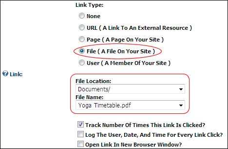

Setting a File Link
How to set a link to a file that has been uploaded to the site using the Link Control. This topic assumes the file has already been uploaded to the Digital Asset Management module that is located on the Admin > File Management page and you are currently viewing the Link Control.
- At Link Type, select File ( A File On Your Site ). Note: This field may not be displayed on some modules.
- At File Location, select the folder where the file is located. This will populate the File Name field below with the file in this folder. Note: The My Folder folder is your own personal folder where you can manage your personal files such as your profile image.
- At File Name, select the file from the drop down list.

Setting a File Link